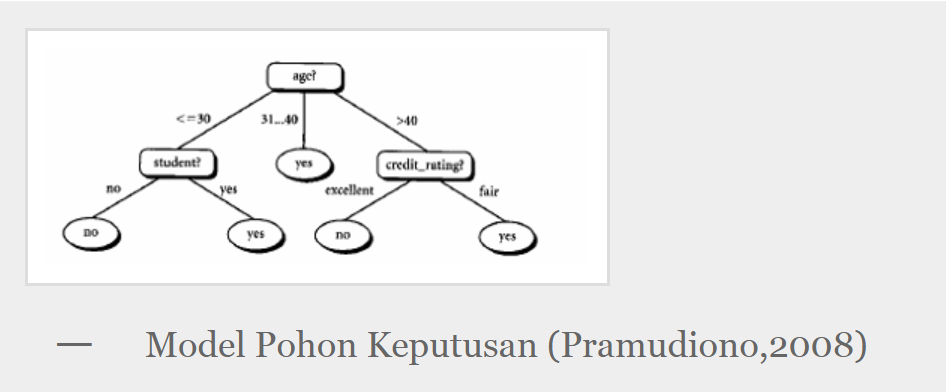
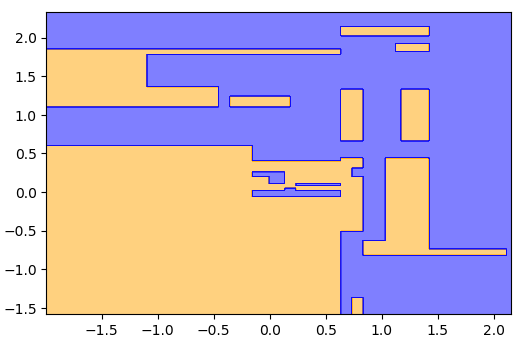

DECISION TREE (Pohon Keputusan)¶
PENDAHULUAN¶
Pohon keputusan adalah alat pendukung keputusan yang menggunakan model keputusan seperti pohon dan kemungkinan konsekuensinya, termasuk hasil acara kebetulan, biaya sumber daya, dan utilitas. Ini adalah salah satu cara untuk menampilkan algoritma yang hanya berisi pernyataan kontrol bersyarat.
Pohon keputusan biasanya digunakan dalam riset operasi, khususnya dalam analisis keputusan, untuk membantu mengidentifikasi strategi yang paling mungkin untuk mencapai tujuan , tetapi juga merupakan alat yang populer dalam pembelajaran mesin .
Sehingga dapat di simpulkan pohon keputusan adalah Pohon yang dalam analisis pemecahan masalah, pemetaan mengenai alternatif-alternatif pemecahan masalah yang dapat diambil dari masalah tersebut. Pohon tersebut juga memperlihatkan faktor-faktor kemungkinan/ probablitas yang akan mempengaruhi alternatif-alternatif keputusan tersebut, disertai dengan estimasi hasil akhir yang akan didapat bila kita mengambil.
Ikhtisar
Pohon keputusan adalah struktur seperti bagan alur di mana setiap simpul internal mewakili "tes" pada atribut (misalnya apakah koin balik muncul kepala atau ekor), setiap cabang mewakili hasil tes, dan setiap simpul daun mewakili label kelas (keputusan diambil setelah menghitung semua atribut). Jalur dari root ke daun mewakili aturan klasifikasi.
Dalam analisis keputusan, pohon keputusan dan diagram pengaruh yang terkait erat digunakan sebagai alat pendukung keputusan visual dan analitis, di mana nilai yang diharapkan atau utilitas yang diharapkan dari alternatif yang bersaing dihitung.
Pohon keputusan terdiri dari tiga jenis simpul:
-
Node keputusan - biasanya diwakili oleh kuadrat
-
Peluang node - biasanya diwakili oleh lingkaran
-
Node akhir - biasanya diwakili oleh segitiga
Pohon keputusan biasanya digunakan dalam riset operasi dan manajemen operasi . Jika, dalam praktiknya, keputusan harus diambil secara online tanpa penarikan kembali di bawah pengetahuan yang tidak lengkap, pohon keputusan harus diparalelkan dengan model probabilitassebagai model pilihan terbaik atau algoritma model seleksi online. Penggunaan lain dari pohon keputusan adalah sebagai alat deskriptif untuk menghitung probabilitas bersyarat.
Pohon keputusan, diagram pengaruh , fungsi utilitas, dan alat dan metode analisis keputusanlainnya diajarkan kepada siswa sarjana di sekolah bisnis, ekonomi kesehatan, dan kesehatan masyarakat, dan merupakan contoh penelitian operasi atau metode ilmu manajemen.
MANFAAT POHON KEPUTUSAN
Pohon keputusan adalah salah satu metode klasifikasi yang paling populer karena mudah untuk diinterpretasi oleh manusia. Pohon keputusan adalah model prediksi menggunakan struktur pohon atau struktur berhirarki. Konsep dari pohon keputusan adalah mengubah data menjadi pohon keputusan dan aturan-aturan keputusan. Manfaat utama dari penggunaan pohon keputusan adalah kemampuannya untuk mem-
1. break down
proses pengambilan keputusan yang kompleks menjadi lebih simpel sehingga pengambil keputusan akan lebih menginterpretasikan solusi dari permasalahan. Pohon Keputusan juga berguna untuk mengeksplorasi data, menemukan hubungan tersembunyi antara sejumlah calon variabel input dengan sebuah variabel target. Pohon keputusan memadukan antara eksplorasi data dan pemodelan, sehingga sangat bagus sebagai langkah awal dalam proses pemodelan bahkan ketika dijadikan sebagai model akhir dari beberapa teknik lain. Sering terjadi tawar menawar antara keakuratan model dengan transparansi model. Dalam beberapa aplikasi, akurasi dari sebuah klasifikasi atau prediksi adalah satu-satunya hal yang ditonjolkan, misalnya sebuah perusahaan.
2. direct mail
membuat sebuah model yang akurat untuk memprediksi anggota mana yang berpotensi untuk merespon permintaan, tanpa memperhatikan bagaimana atau mengapa model tersebut bekerja.
MODEL POHON KEPUTUSAN
Pohon keputusan adalah model prediksi menggunakan struktur pohon atau struktur berhirarki. Contoh dari pohon keputusan dapat dilihat di Gambar berikut ini.

Disini setiap percabangan menyatakan kondisi yang harus dipenuhi dan tiap ujung pohon menyatakan kelas data. Contoh di Gambar 1 adalah identifikasi pembeli komputer,dari pohon keputusan tersebut diketahui bahwa salah satu kelompok yang potensial membeli komputer adalah orang yang berusia di bawah 30 tahun dan juga pelajar. Setelah sebuah pohon keputusan dibangun maka dapat digunakan untuk mengklasifikasikan record yang belum ada kelasnya. Dimulai dari node root, menggunakan tes terhadap atribut dari record yang belum ada kelasnya tersebut lalu mengikuti cabang yang sesuai dengan hasil dari tes tersebut, yang akan membawa kepada internal node (node yang memiliki satu cabang masuk dan dua atau lebih cabang yang keluar), dengan cara harus melakukan tes lagi terhadap atribut atau node daun. Record yang kelasnya tidak diketahui kemudian diberikan kelas yang sesuai dengan kelas yang ada pada node daun. Pada pohon keputusan setiap simpul daun menandai label kelas. Proses dalam pohon keputusan yaitu mengubah bentuk data (tabel) menjadi model pohon ( tree) kemudian mengubah model pohon tersebut menjadi aturan (rule).
Kelebihan Pohon Keputusan
Kelebihan dari metode pohon keputusan adalah:
- Daerah pengambilan keputusan yang sebelumnya kompleks dan sangat global, dapat diubah menjadi lebih simpel dan spesifik.
- Eliminasi perhitungan-perhitungan yang tidak diperlukan, karena ketika menggunakan metode pohon keputusan maka sample diuji hanya berdasarkan kriteria atau kelas tertentu.
- Fleksibel untuk memilih fitur dari internal node yang berbeda, fitur yang terpilih akan membedakan suatu kriteria dibandingkan kriteria yang lain dalam node yang sama. Kefleksibelan metode pohon keputusan ini meningkatkan kualitas keputusan yang dihasilkan jika dibandingkan ketika menggunakan metode penghitungan satu tahap yang lebih konvensional.
- Dalam analisis multivariat, dengan kriteria dan kelas yang jumlahnya sangat banyak, seorang penguji biasanya perlu untuk mengestimasikan baik itu distribusi dimensi tinggi ataupun parameter tertentu dari distribusi kelas tersebut. Metode pohon keputusan dapat menghindari munculnya permasalahan ini dengan menggunakan criteria yang jumlahnya lebih sedikit pada setiap node internal tanpa banyak mengurangi kualitas keputusan yang dihasilkan.
- Sederhana untuk dipahami dan ditafsirkan. Orang-orang dapat memahami model pohon keputusan setelah penjelasan singkat.
- Memiliki nilai bahkan dengan sedikit data keras. Wawasan penting dapat dihasilkan berdasarkan para ahli yang menggambarkan situasi (alternatifnya, probabilitas, dan biaya) dan preferensi mereka untuk hasil.
Kekurangan Pohon Keputusan
- Terjadi overlap terutama ketika kelas-kelas dan criteria yang digunakan jumlahnya sangat banyak. Hal tersebut juga dapat menyebabkan meningkatnya waktu pengambilan keputusan dan jumlah memori yang diperlukan.
- Pengakumulasian jumlah eror dari setiap tingkat dalam sebuah pohon keputusan yang besar.
- Kesulitan dalam mendesain pohon keputusan yang optimal.
- Hasil kualitas keputusan yang didapatkan dari metode pohon keputusan sangat tergantung pada bagaimana pohon tersebut didesain.
- Mereka tidak stabil, yang berarti bahwa perubahan kecil dalam data dapat menyebabkan perubahan besar dalam struktur pohon keputusan yang optimal.
- Mereka seringkali relatif tidak akurat. Banyak prediktor lain berkinerja lebih baik dengan data serupa. Ini dapat diperbaiki dengan mengganti pohon keputusan tunggal dengan hutan pohon keputusan acak, tetapi hutan acak tidak semudah ditafsirkan sebagai pohon keputusan tunggal.
- Perhitungan bisa menjadi sangat kompleks, terutama jika banyak nilai tidak pasti dan / atau jika banyak hasil dikaitkan.
IMPLEMENTASI¶
perpustakaan bisa di instal dengan pip:
pip install sklearn
pip install numpy
pip install pandas
pip install matlotlibBagian 1 - Pengolahan Data
Langkahh 1 : Mengimpor perpustakaan
import numpy as np
import matplotlib.pyplot as plt
import pandas as pdlangkah ke 2 : Mengimpor dataset
dataset = pd.read_csv ('Sosial_Media.csv') Langkah ke 3 : mencetak entri pertama dari dataset
print (dataset.head())langkah ke 4 : Menyimpan variabel dependen dalam y yaitu Dibeli yaitu 1 jika pengguna membeli mobil dan 0 sebaliknya.
X = dataset.iloc[:, [2, 3]].values
y = dataset.iloc[:, 4].valuesLangkah ke 5 : Mengimpor pustaka Cross Validation yang sekarang dikenal sebagai ModelSelection dalam versi Python yang lebih baru
from sklearn.model_selection import train_test_splitLangkah ke 6 : membagi data menjadi 75% data untuk pelatihan dan 25% untuk menguji data
X_train, X_test, y_train, y_test = train_test_split(X, y, test_size = 0.25, random_state = 0) Langkah ke 7 : menerapkan penskalaan fitur .
from sklearn.preprocessing import StandardScaler Langkah ke 8 : Membuat Objek Skalar standar dari Kelas Preprocessing dan Scaling X_train dengan mencocokkan objek Standard Scalar ke Matrix of Features X_train Menskalakan X_test dengan dasar yang sama.
sc = StandardScaler ()
X_train = sc.fit_transform (X_train)
X_test = sc.transform (X_test)
Bagian 2 - Klasifikasi Pohon Keputusan
Langkah ke 9 : mengimpor DecisionTreeClassifier dari sklearn.tree
from sklearn.tree import DecisionTreeClassifierLangkah ke 10 : Membuat classifier dan menerapkan kriteria 'entropi' yang banyak digunakan untuk itu dilengkapi classifier dengan set data pelatihan.
classifier = DecisionTreeClassifier(criterion = 'entropy', random_state = 0)
classifier.fit(X_train, y_train)Bagian 3 - Merencanakan Grafik
langkah ke 11 : mengatur variabel aranged_ages akan menskala usia pengguna mulai dari usia minimum hingga usia maksimum yang bertambah 0,01.
from matplotlib.colors import ListedColormap
X_set, y_set = X_test, y_test
aranged_ages = np.arange(start = X_set[:, 0].min(), stop = X_set[:, 0].max(), step = 0.01)Langkah ke 12 : mengatur Variabel aranged_salaries akan menaikkan skala pengguna mulai dari gaji minimum hingga gaji maksimum yang bertambah 0,01.
aranged_salaries = np.arange(start = X_set[:, 1].min(), stop = X_set[:, 1].max(), step = 0.01)langkah ke 13 : np. meshgrid () mengambil aranged_ages dan aranged_salaries untuk membentuk X1 dan X2.
X1, X2 = np.meshgrid(aranged_ages, aranged_salaries)Langkah ke 14 : X1 dan X2 digunakan untuk membuat grafik yang mengklasifikasikan semua titik data menggunakan klasifikasi pohon keputusan. Ini dilakukan dengan menggunakan metode plt.contourf ()
plt.contourf(X1, X2, classifier.predict(np.array([X1.ravel(), X2.ravel()]).T).reshape(X1.shape),
alpha = 0.5, cmap = ListedColormap(('orange', 'blue')))

-
Decision Tree tidak menggambar garis lurus, atau kurva, itu membuat bagian seperti yang ditunjukkan pada grafik di atas
-
bagian oranye adalah pengguna yang tidak akan membeli mobil dan bagian biru untuk pengguna yang akan membeli mobil
Bagian 4 - Kumpulan Test Plot
langkah ke 15 : membuat kode untuk memplot poin data aktual dalam klasifikasi. poin merah menunjukkan pengguna yang tidak membeli mobil. dan poin hijau menunjukkan pengguna yang membeli mobil
plt.xlim(X1.min(), X1.max())
plt.ylim(X2.min(), X2.max())
for i, j in enumerate(np.unique(y_set)):
plt.scatter(X_set[y_set == j, 0], X_set[y_set == j, 1],
c = ListedColormap(('red', 'green'))(i), label = j)
plt.title('Decision Tree Classification (Test set)')
plt.xlabel('Age')
plt.ylabel('Salary')
plt.legend()
plt.show() 
Perhatikan bahwa kita telah merencanakan 100 pengamatan dari set uji kita dan keluar dari mereka
-
3 titik hijau diamati pada area oranye
-
6 titik merah diamati di area biru
Ini berarti, dari 100 titik pengamatan, klasifikasi Pohon Keputusan memperkirakan 91 hasil dengan benar dan hanya 9 yang salah.
semoga bermanfaat :))
REFERENSI¶
https://en.wikipedia.org/wiki/Decision_tree
https://fairuzelsaid.wordpress.com/2009/11/24/data-mining-konsep-pohon-keputusan/
http://www.thejavageek.com/2018/02/28/decision-tree-classification/&prev=search